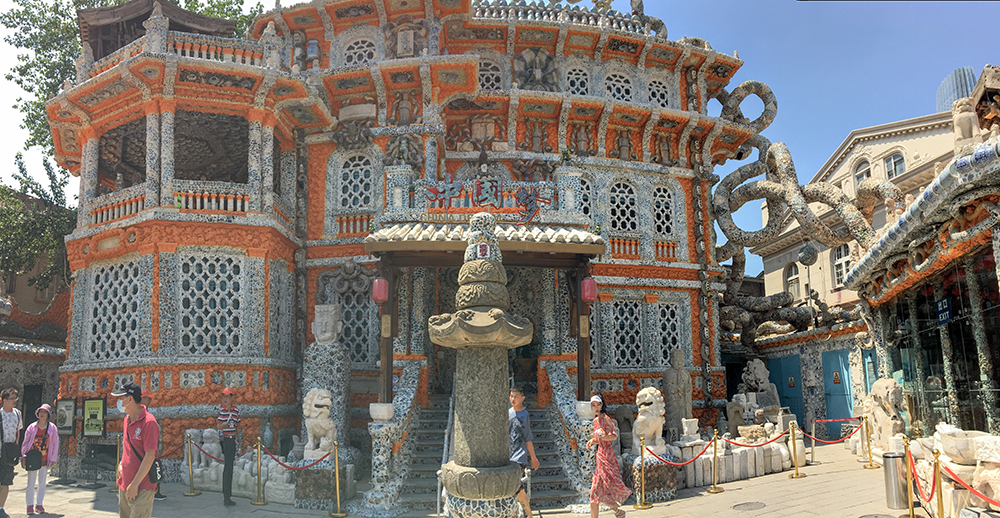

I want to pursue architecture as my career and lighting is an important part of making floor plans. Appropiate lighting is very mportant for a space to be highlighted. The image I selected shows how different lighting highlights different walls, paintings, and windows. In my project, whne the user will click on the image, the image will change and show a different image with lights turned on in that specific area.
Lynelles Picture is of the Procelain House in Tianjin, China. As a student interested in architectire, looking at historic buildings is part of weekly routine. This building has vast hisory and every elemnt of this building has its own history.The pink, organge and white carvings on the wall are unique and red accents makes the white pop out. Maybe Lynelle could use the zoom function to show the details of the building.